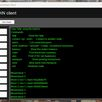
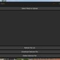
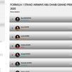

Welcome
Hi, I’m Brandon — a Polish/Canadian student passionate about technology, travel, and learning. I enjoy building both physical and digital technology.
kraków,
poland
Friday, October 2, 2026
Hi, I’m Brandon — a Polish/Canadian student passionate about technology, travel, and learning. I enjoy building both physical and digital technology.
I am a second-year Bachelor of Applied Computer Science (BCS) student at Dalhousie University in Halifax, Nova Scotia. My main interests lie in web/software development and cybercrime, particularly how modern systems scale, fail, and are secured. I enjoy working on projects that force me to think beyond coursework and into real-world constraints.
Looking forward, I want to continue building meaningful software, gain experience in professional environments, and deepen my understanding of how technology can be used responsibly. I’m always open to learning from new people, new systems, and new challenges.
Dalhousie University provides me with a strong foundation in computer science, ranging from algorithms and data structures to modern topics like machine learning. Outside of lectures, I focus on applying these concepts through independent projects and experimenting with real systems and tools.
I enjoy exploring software development through hands-on projects, learning new tools as I go, and refining how I approach problem-solving. I’m especially interested in systems that operate continuously and at scale.
Traveling gives me perspective outside of code. Prague is my favorite city — the mix of history, architecture, and everyday life makes you feel like you're in a fairy tale.
Designed and developed a responsive personal website to showcase projects, experience, and interests, featuring reusable React components, scroll-based animations, and theme-aware light/dark styling. Built with an emphasis on clean UI structure, maintainability, and performance.
Tech: React, API, JavaScript, CSS, Responsive Design
Built a JavaFX desktop application that displays Canadian hourly and daily weather forecasts using external weather APIs. Focused on clean UI layout, data parsing, and asynchronous updates to deliver real-time forecast information.
Tech: Java, Maven, JavaFX, REST APIs, JSON

Created a GUI blockchain client in JFrame that allows users to mine, send, and receive a custom cryptocurrency called CHINTCOIN. Implemented core blockchain concepts such as proof-of-work mining, transaction validation, and decentralized ledger management to explore distributed systems and cryptographic principles. All developed in Java.

Created a lightweight personal cloud file-sharing system enabling secure file transfer between my PC and laptop. Built with Python and Tkinter, hosted on a Raspberry Pi, and designed to explore networking, file I/O, and self-hosted infrastructure concepts.
Developed a C# WinForms sticky notes application that runs as a background process on Windows. Designed for low resource usage, persistent note storage, and seamless desktop integration without interrupting the user workflow.
I prioritize clarity, maintainability, and understanding how systems work under the hood. I am most interested in projects that expose real-world constraints—networking, security, data flow, and user experience.

Developed a web application that displays live Formula 1 standings and race data by integrating third-party APIs. Implemented dynamic updates, structured state management, and a responsive interface optimized for real-time data consumption. Hosted on an Oracle Cloud VM and displayed on huzarzy.com.
I’d love to connect! Whether it’s to chat about tech, travel, or potential collaborations, feel free to reach out.
You can also reach out to me via email at bkuciapski1@gmail.com (personal) or bkuciapski@dal.ca (school).
I check my email regularly, so don’t hesitate to send a message if you have questions, project ideas, or just want to connect. I promise to get back to you as soon as possible!
Networking and collaboration are some of my favorite parts of tech and learning. Whether it’s discussing a programming challenge, I’m always happy to chat.